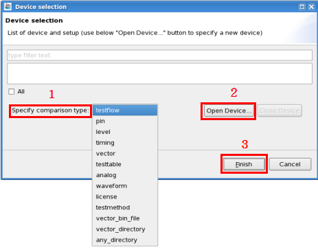

Test Program Comparator
The Test Program Comparator compares test programs and generates a comparison report in HTML or Excel format. The comparison report highlights the differences between the selected test programs.
About this task
The Test Program Comparator can compare:
- Various setups, such as pins, levels, timings, vectors (including binary data), analog setups (including RF setting), waveforms, testflows (including graphic logic and checksum), test methods, device licenses, and technology files.
- Setups of any number of testflows or test programs.Note When the count of compared testflows is more than 10, it only generates an Excel report.
Before you begin
Make sure:
- You use the "S&S_TP360_Plus_SOC" license.
- Your test program setups are correct.
Procedure
-
In the Specify test program setups for comparison row of the Setup tab, click the
 button.
button.
The Device selection window opens in which you can select the objects to compare:

-
If you want to change the base object, in the Specify one setup as reference row of the
Setup tab, click the button. A new window opens listing all the selected objects.Select an alternative base
object and click OK to accept the selection and close this window.
-
If you want to customize the options for comparison, on the Setup tab, click the
 icon to open the Preference page of Test Program
Comparator.
icon to open the Preference page of Test Program
Comparator.
Results
An HTML comparison report is displayed in the report area of TP360. You can save the
report to a desired directory by clicking the  icon in the report view.
icon in the report view.
If you are comparing more than 10 testflows, an Excel report is generated. The file path of the Excel report is displayed in the report area.
To learn more about the comparison report, see Comparison reports of Test Program Comparator.
Functional changes
- Introduced in SmarTest 7.2.2
- SmarTest 7.3.2: Enhanced procedure to improve flow.